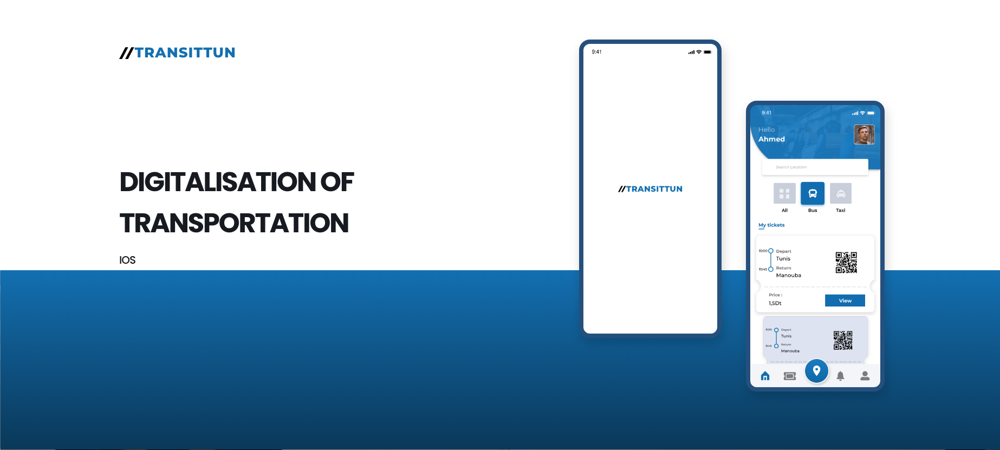
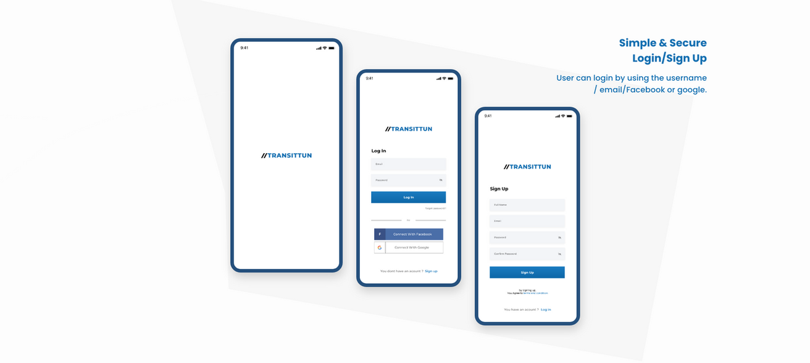
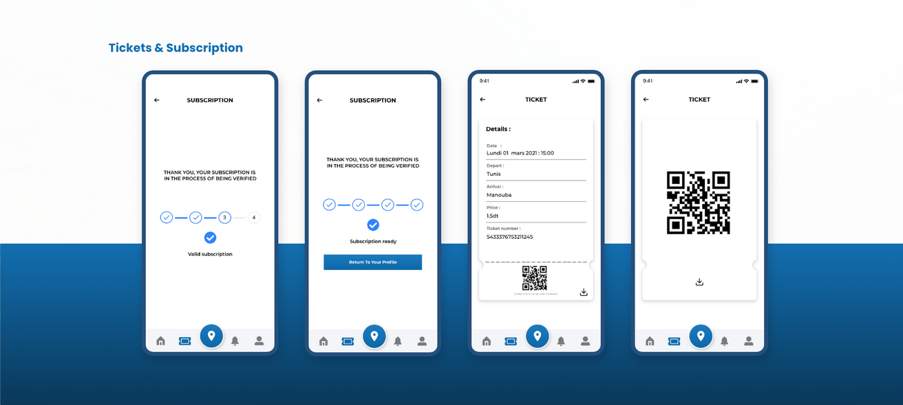
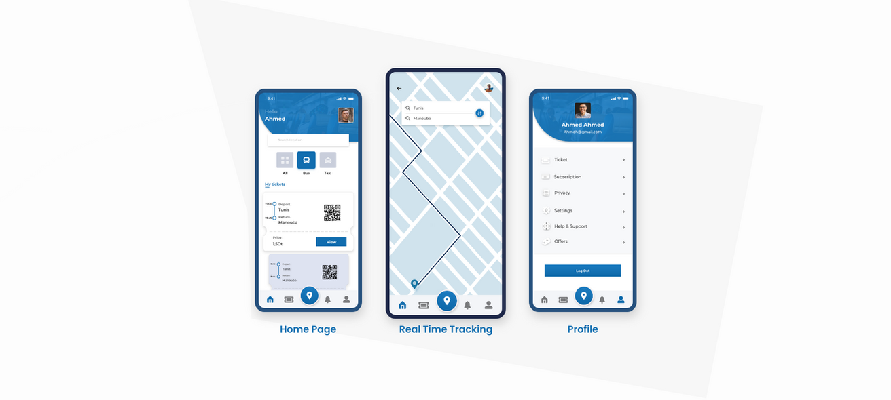

Case study
Independent concept · 2021
Reimagining public transport navigation for Tunisian urban commuters.
Transitun explored what a more useful mobility companion could look like when the real challenge is not just route data, but commuter confidence while moving through fragmented urban transport systems.

Why this project mattered
Public transport UX often assumes users already know the system. This concept focused instead on uncertainty: where to transfer, whether a stop is correct, and how to feel oriented while the city keeps moving.
Product-wise, this was about designing for confidence under imperfect conditions. The challenge was not adding more transport information, but deciding what to show so riders could make the next good choice without overload.
Role & scope
What I explored
An independent mobility concept shaped through civic UX and product-strategy thinking.
Transitun was a self-initiated exploration into how public transport navigation in Tunisia could feel more reliable, more humane, and more usable while people are already in motion. I treated it as both a UX problem and a product-definition exercise: what should a mobility product prioritize if commuter confidence is the main outcome?
Problem framing and IA
Defined the core commuter pain points and structured the product around the decisions riders actually need to make in motion.
Mobile-first route confidence
Designed hierarchy, cards, and route guidance patterns to reduce uncertainty around stops, transfers, and direction.
Civic value through product design
Used the concept to test how better information design could improve everyday mobility confidence, not just interface aesthetics.
Challenge
Commuter reality
The transport problem was not lack of information. It was lack of confidence.
Riders often need a sense of orientation more than they need more data. This concept focused on the moments of doubt that shape the commute: whether the stop is correct, whether the transfer is still ahead, and whether the rider can trust the next step without mentally reconstructing the whole route.
Riders needed orientation and reassurance more than raw route lists. Good transport UX had to work for fast choices, noisy environments, and partial information. The value of the product depended on whether people could understand the system while already moving through it.
Fragmented information
Existing public transport information is often hard to trust quickly, especially
when route logic and stop context are not obvious in the moment.
Context
In-motion decisions
Riders need the next step now, not dense reference screens. Transfers,
stop-level confirmation, and route confidence had to be easier to understand.
Issue
Civic usability
The concept treated clarity as a public-service outcome, not just a feature or
branding exercise.
Need
Trust gap
Even when route data exists, commuters still need confirmation that they are on
the right path. The product needed to reduce doubt, not simply display options.
Risk
User problem
Riders needed an interface that answered immediate questions: Am I at the right stop? Is this the right transfer? How many steps are left before I need to act?
Product problem
The concept needed to prove that route confidence and mental clarity are core product outcomes in mobility, not secondary details after route data is listed.
Process
Problem to concept
The concept was built by prioritizing rider decisions over transport-system noise.
The process centered on information hierarchy, route comprehension, and calmer mobile interactions. I deliberately stripped away what the rider did not need at a given moment so the interface could focus on guidance, transfer clarity, and immediate confidence.
Route-first hierarchy
I focused the interface on route comprehension, transfer visibility, and stop context so the next decision stayed readable in seconds.
The design intentionally reduced noise. Instead of overwhelming the rider with every possible transport detail, it prioritized the information that made the next action easier and more confident.
Calmer mobile interactions
Cards, hierarchy, and iconography were tuned around quick recognition and reduced mental effort while people were already navigating the city.
This was a mobile-first exercise in decision design: how to make movement through a city feel less uncertain through structure, pacing, and information emphasis.
Commuter pain-point framing
Started from the rider’s real moments of doubt: wrong stop anxiety, route uncertainty, and transfer hesitation while already in motion.
Information architecture
Organized route, stop, and trip data so the next action stayed readable without overwhelming the interface with transport noise.
Civic UX thinking
Used the concept as a way to test how public-service design in Tunisia could better support trust, clarity, and daily movement.
Interaction prioritization
Organized the product around the most urgent rider questions rather than around the system’s full data complexity.
Concept framing
Used the project to articulate a stronger point of view on how mobility interfaces in Tunisia can be more human-centered and more useful in real urban contexts.
My role in the process
I framed the opportunity, structured the IA, designed the interaction language, and used the concept to test what a more trustworthy civic mobility experience could look like.
Product lens
The work approached public transport UX as a product problem rooted in confidence, sequencing, and clarity rather than simply a navigation or map styling exercise.



Use cases from the original Transitun concept
I replaced the placeholder visuals with the actual boards from the earlier Transitun portfolio so this case now shows the real concept outputs: onboarding, ticketing and subscription handling, plus the main navigation model for home, live tracking, and profile access.
Together, these screens make the product direction much clearer. They show that the concept was not only about route browsing, but about reducing commuter stress across entry, payment, access, and in-motion orientation.
Outcome
Concept value
Transitun became a proof of how civic products can reduce stress through better structure.
The project demonstrates a product point of view: mobility interfaces should help people act with confidence in imperfect real-world systems. That principle shaped the information model, the interaction rhythm, and the overall service value of the concept.
UX outcome
Transitun clarified how route confidence can be designed, not assumed. It showed that the interface can reduce stress by surfacing only the information riders need when they need it.
Strategic value
The concept also demonstrates how I think beyond screens: framing public mobility as a service design challenge where trust, navigation, and everyday usability all shape the product strategy.
Clarity is a civic responsibility
When a product supports daily movement in a city, better UX is not just nice to
have. It directly affects confidence, independence, and how accessible the system
feels to the public.